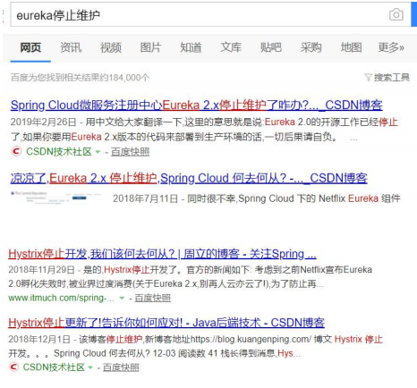
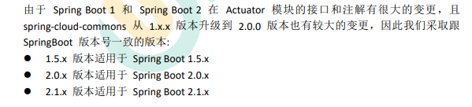
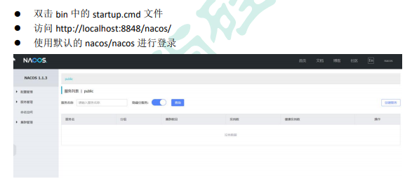

# 一、Spring Cloud Alibaba
# 1、Spring Cloud Alibaba 简介
# 1）、简介
Spring Cloud Alibaba 致力于提供微服务开发的一站式解决方案。此项目包含开发分布式应用 微服务的必需组件，方便开发者通过 Spring Cloud 编程模型轻松使用这些组件来开发分布 式应用服务。
依托 Spring Cloud Alibaba，您只需要添加一些注解和少量配置，就可以将 Spring Cloud 应用 接入阿里微服务解决方案，通过阿里中间件来迅速搭建分布式应用系统。
https://github.com/alibaba/spring-cloud-alibaba
# 2）、为什么使用

SpringCloud 的几大痛点
SpringCloud 部分组件停止维护和更新，给开发带来不便；
SpringCloud 部分环境搭建复杂，没有完善的可视化界面，我们需要大量的二次开发和定制
SpringCloud 配置复杂，难以上手，部分配置差别难以区分和合理应用
**SpringCloud Alibaba 的优势：** 阿里使用过的组件经历了考验，性能强悍，设计合理，现在开源出来大家用 成套的产品搭配完善的可视化界面给开发运维带来极大的便利 搭建简单，学习曲线低。
结合 SpringCloud Alibaba 我们最终的技术搭配方案：
SpringCloud Alibaba - Nacos：注册中心（服务发现 / 注册）
SpringCloud Alibaba - Nacos：配置中心（动态配置管理）
SpringCloud - Ribbon：负载均衡
SpringCloud - Feign：声明式 HTTP 客户端（调用远程服务）
SpringCloud Alibaba - Sentinel：服务容错（限流、降级、熔断）
SpringCloud - Gateway：API 网关（webflux 编程模式）
SpringCloud - Sleuth：调用链监控
SpringCloud Alibaba - Seata：原 Fescar，即分布式事务解决方案
# 3）、版本选择

# 4）、项目中的依赖
依赖管理坐标 | |
<dependencyManagement> | |
<dependencies> | |
<dependency> | |
<groupId>com.alibaba.cloud</groupId> | |
<artifactId>spring-cloud-alibaba-dependencies</artifactId> | |
<version>2.1.0.RELEASE</version> | |
<type>pom</type> | |
<scope>import</scope> | |
</dependency> | |
</dependencies> | |
</dependencyManagement> |
添加了上述坐标就已经将 Spring Cloud Alibaba 版本锁定了，以后填入对应组件不用再写版本号
# 2、SpringCloud Alibaba-Nacos [作为注册中心]
Nacos 是阿里巴巴开源的一个更易于构建云原生应用的动态服务发现、配置管理和服务管理 平台。他是使用 java 编写。需要依赖 java 环境
Nacos 文档地址： https://nacos.io/zh-cn/docs/quick-start.html
# 1）、下载 nacos-server
https://github.com/alibaba/nacos/releases
# 2）、启动 nacos-server

# 3）、将微服务注册到 nacos 中
# 1、首先，修改 pom.xml 文件，引入 Nacos Discovery Starter。
<dependency> | |
<groupId>com.alibaba.cloud</groupId> | |
<artifactId>spring-cloud-starter-alibaba-nacos-discovery</artifactId> | |
</dependency> |
# 2、在应用的 /src/main/resources/application.properties 配置文 件中配置 Nacos Server 地址
spring.cloud.nacos.discovery.server-addr=127.0.0.1:8848 |
# 3、使用 @EnableDiscoveryClient 开启服务注册发现功能
@SpringBootApplication | |
@EnableDiscoveryClient | |
public class ProviderApplication { | |
public static void main(String[] args) { | |
SpringApplication.run(Application.class, args); | |
} | |
} |
# 4、启动应用，观察 nacos 服务列表是否已经注册上服务
-- 注意：每一个应用都应该有名字，这样才能注册上去。修改 application.properties 文件 | |
spring.application.name=service-provider | |
server.port=8000 |
# 5、注册更多的服务上去，测试使用 feign 远程调用
Nacos 使用三步 | |
1、导包 nacos-discovery | |
2、写配置，指定 nacos 地址，指定应用的名字 | |
3、开启服务注册发现功能@EnableDiscoveryClient | |
Feign 使用三步 | |
1、导包 openfeign | |
2、开启@EnableFeignClients 功能 | |
3、编写接口，进行远程调用 | |
@FeignClient("stores") | |
public interface StoreClient { | |
@RequestMapping(method = RequestMethod.GET, value = "/stores") | |
List<Store> getStores(); | |
@RequestMapping(method = RequestMethod.POST, value = "/stores/{storeId}", consumes = "application/json") | |
Store update(@PathVariable("storeId") Long storeId, Store store); | |
} |
# 6、更多配置
https://github.com/alibaba/spring-cloud-alibaba/blob/master/spring-cloud-alibaba-examples/nacos-example/nacos-discovery-example/readme-zh.md#more